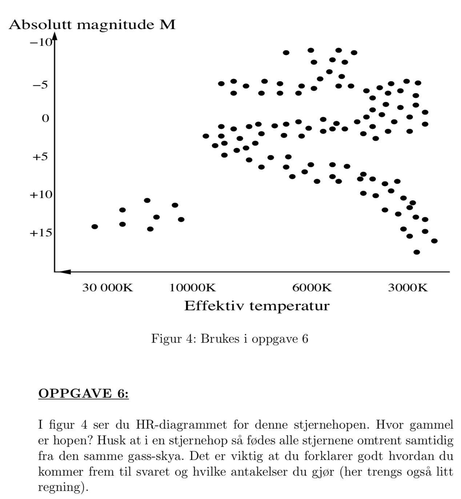

Forrige side🙂 🙁Farvel hovedserie!PADLET
Oversikten du nå har skrevet i stikkordsform skulle være nok til å huske hele prosessen. Hvis du var usikker på noen av disse overgangene, spør foreleser! Så over til et (av mange) tilfeller der vi kan se nytten av å kunne litt stjerneutvikling.
Oppg.6, avsl. eksamen 2011: 